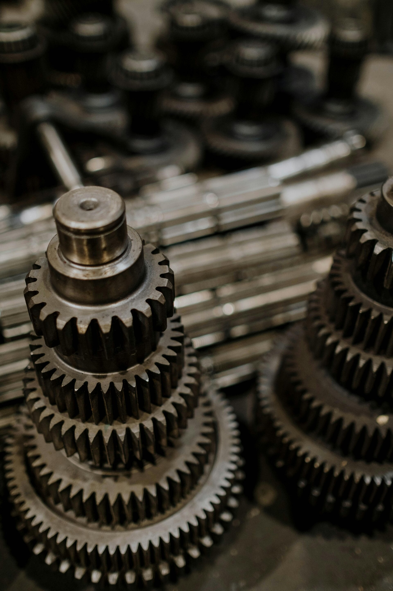
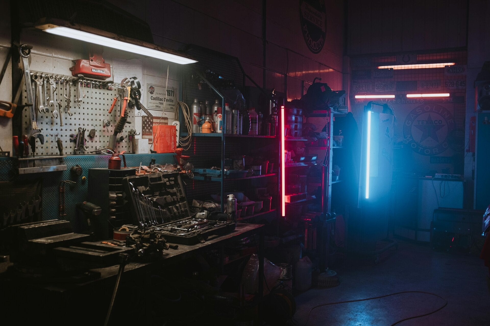
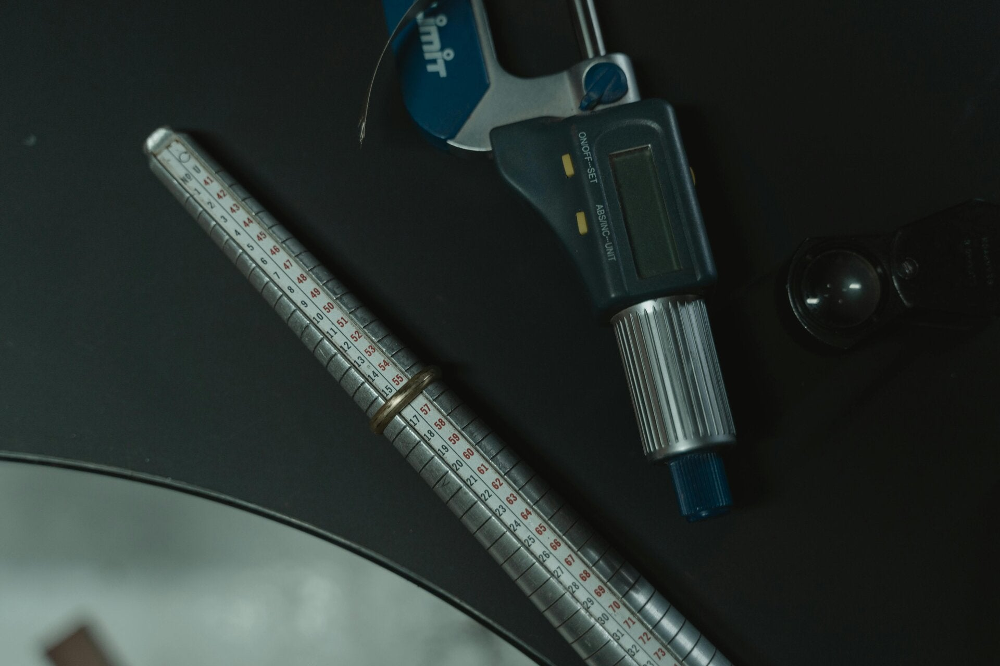
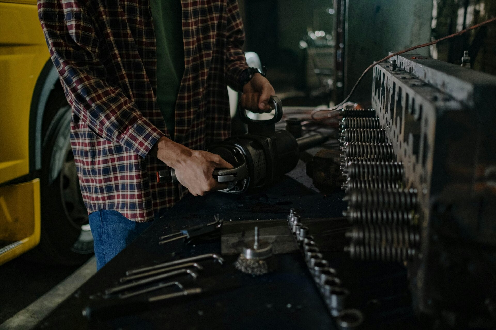

G-Lader-Service
Befundung, Revision, G60-Umbauten, Schadensanalyse sowie exakte Vermessung und lückenlose Dokumentation.
Service anfragenSpezialist für G-Lader, Motoren und Getriebe in Allhartsberg. Von fundierter Befundung über fachgerechte Revision bis hin zum individuellen G60-Umbau erhalten wir die Fahrdynamik deines Klassikers.
Unsere Leistungen
Befundung, Revision, G60-Umbauten, Schadensanalyse sowie exakte Vermessung und lückenlose Dokumentation.
Service anfragen
Rumpfmotoren, Komplettrevisionen, Vermessung sämtlicher Bauteile und fundierte Diagnosen für verlässliche Leistung.
Mehr erfahren
Fachgerechte Überholungen, Austausch von Synchronringen, Lagerrevisionen und Differentialumbauten.
Mehr erfahren
Detaillierte Schadensanalysen, Prüfung von Toleranzen und transparente Dokumentation vor jeder Bearbeitung.
Termin anfragenBuchinger Youngtimertechnik steht für kompromisslose Qualität bei der Revision klassischer VW- und Audi-Aggregate. Mit Sitz in Allhartsberg verbinden wir fundierte Fachkenntnis, moderne Messverfahren und echte Hingabe zur Erhaltung automobiler Ikonen.
Jedes Aggregat wird bei uns sorgfältig zerlegt, gereinigt und bis ins letzte Detail vermessen. So garantieren wir maximale Haltbarkeit und standfeste Performance für deinen Klassiker auf der Straße.

“Mein G60 Lader läuft nach der Komplettüberholung und Vermessung wieder absolut sauber. Erstklassige Dokumentation und transparente Beratung von Anfang bis Ende.
Markus H.
“Der G60-Umbau hat alle Erwartungen übertroffen. Saubere Arbeit, top Befundung und schnelle Rückmeldung. Klare Empfehlung für jeden VW-Enthusiasten!
“Das Getriebe meines Golfs schaltet sich dank der neuen Synchronringe und der Lagerüberholung wie am ersten Tag. Hier spürt man die Liebe zum Youngtimer.
Christian W.